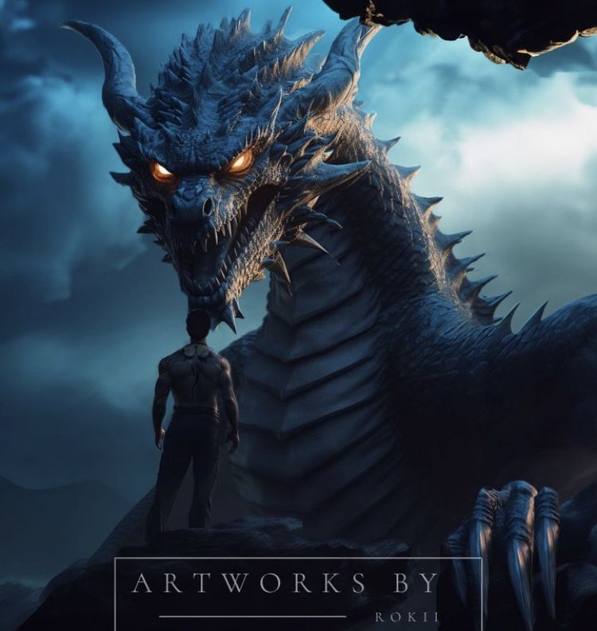
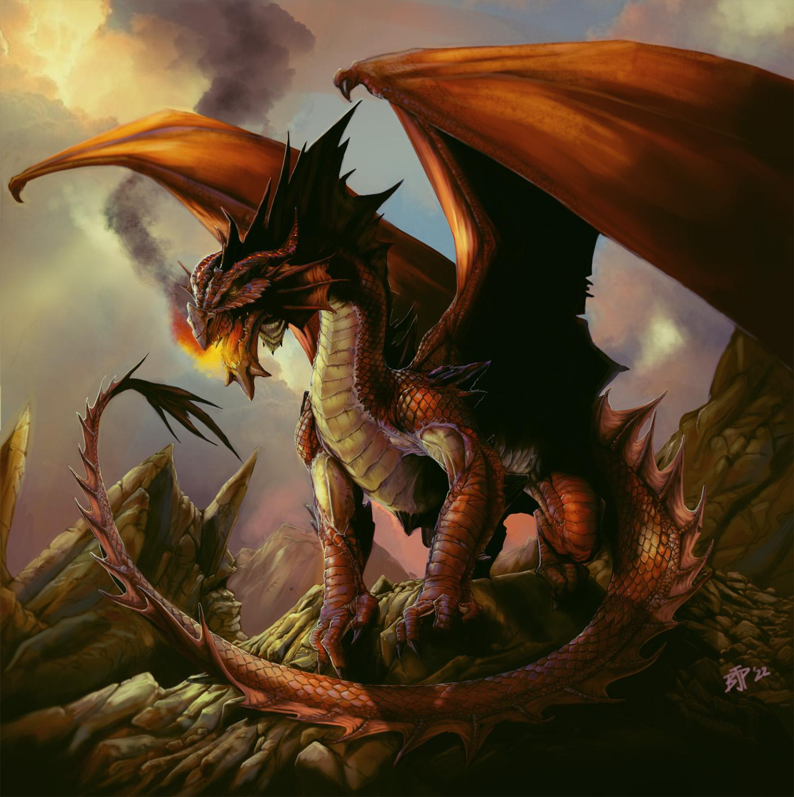

Dragão Negro

Conhecidos por sua força e intelecto. Eles são dragões imponentes e poderosos, e é raro um cavaleiro forjar um vínculo com um deles. Tairn, o dragão de Xaden e Violet, é um Dragão Negro.
Dragão Azul
Os dragões azuis vêm em uma variedade de tons, do safira ao azul-marinho. São conhecidos por serem enormes, e sua característica distintiva é serem o covil mais implacável da raça dos dragões.
Dragão Vermelho

São a casta mais comum e leal de dragões. Eles são fortes, ágeis e têm um temperamento mais dócil, o que os torna ideais para a maioria dos cavaleiros.
Dragão Laranja

Os laranjas são o covil mais imprevisível de sua espécie , o que os torna inerentemente perigosos
Dragão Verde

Eles exibem alta inteligência e demonstram eficácia excepcional como armas de cerco.
Dragão Marrom
A característica definidora dos dragões marrons é que é melhor não demonstrar "trepidação" , medo ou hesitação perto deles.